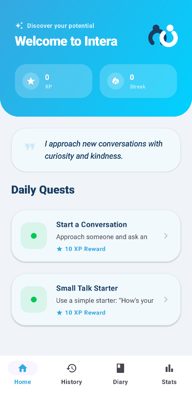
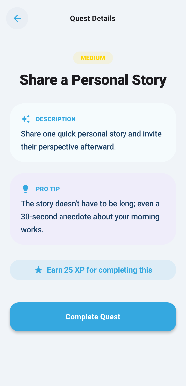
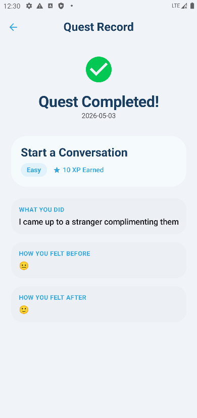

Social tasks
Selected micro-challenges help you practice real social moments at a pace that stays manageable.
Intera turns exposure therapy principles into small daily tasks, reflection, and visible progress, making growth practical instead of overwhelming.

Product preview


Selected micro-challenges help you practice real social moments at a pace that stays manageable.
Track anxiety levels before and after, thoughts, and small wins so emotions become patterns you can understand.
Progress charts make confidence visible, with streaks and milestones that reward steady practice.
Evidence-guided design
Intera is designed around gradual exposure, reflection, and repeatable routines. The experience feels friendly, while the structure supports consistent behavior change.
It is not a replacement for professional therapy. It is a self-guided support tool for practicing small, manageable social steps.
Small challenges reduce overwhelm and build strength.
Journaling turns every attempt into useful feedback.
Statistics make invisible confidence gains easier to trust.
Avoiding social situations can keep fear alive. Intera encourages gentle, repeated practice so the brain can learn that many moments are safer than they feel.
Writing down what happened before and after a challenge helps separate predictions from reality and makes progress easier to notice.
Small daily actions are easier to repeat than big leaps. Streaks, XP, and milestones turn practice into a steady routine.
Before-and-after anxiety ratings help reveal patterns: which situations feel hardest, which ones improve, and where confidence is growing.
Get in touch
For feedback, partnerships, school projects, press, or investment conversations, send a message directly.
Send me an email